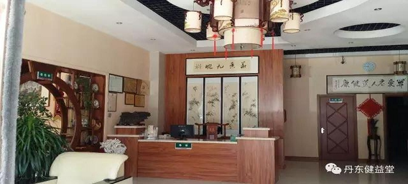
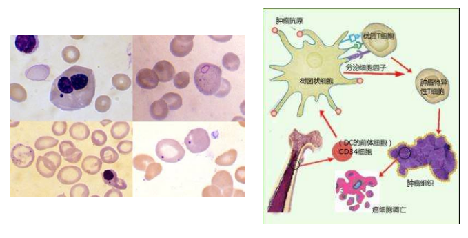

科室介绍

为中医内科和中医康复科结合的二级特色治疗科室，以中医药为主多学科综合治疗肿瘤，提出“整体调节、综合疗法贯穿于肿瘤治疗全过程”的理论，主张“晚期病人坚持以人为本、带瘤生存”，取得了显著疗效。开展中药制剂配合中医导引（五合含香）疗法治疗各期肿瘤，不仅可以减轻介入化疗后所产生的副作用，如肝功能损害，而且还可以增强抗癌作用。采用多途径给药，将中药内服与直肠滴注相结合，综合治疗消化道肿瘤，特别是晚期病人，进食困难，或者合并肠梗阻，无法进食，利用直肠黏膜的吸收作用，发挥药效，减轻癌性疼痛，预防肿瘤复发和转移，并减轻放、化疗副作用。得了恶性肿瘤不可怕，关键是要把心放下！
